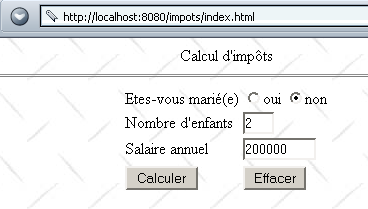
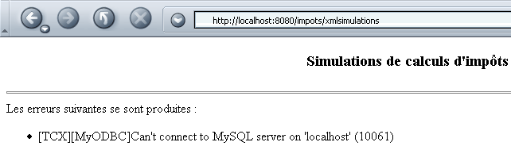

6. XML و JAVA
في هذا الفصل، نقدم استخدام مستندات XML مع جافا. وسنفعل ذلك في سياق تطبيق الضرائب الذي تمت دراسته في الفصل السابق.
6.1. ملفات XML وأوراق الأنماط XSL
لننظر إلى الملف XML simulations.xml التالي الذي قد يمثل نتيجة محاكاة حسابات الضرائب:
<?xml version="1.0" encoding="ISO-8859-1"?>
<simulations>
<simulation marie="oui" enfants="2" salaire="200000" impot="22504"/>
<simulation marie="non" enfants="2" salaire="200000" impot="33388"/>
</simulations>
إذا قمنا بعرضه باستخدام IE 6، نحصل على النتيجة التالية:

يتعرف IE6 على أنه يتعامل مع ملف XML (بفضل اللاحقة .xml للملف) ويقوم بتنسيقه بطريقة خاصة به. أما مع متصفح Netscape، فسنحصل على صفحة فارغة. ومع ذلك، إذا نظرنا إلى الكود المصدري (View/Source)، فسنجد الملف الأصلي XML:

لماذا لا يعرض Netscape أي شيء؟ لأنه يحتاج إلى ورقة أنماط تحدد له كيفية تحويل الملف XML إلى ملف HTML الذي يمكنه عرضه بعد ذلك. ويحدث أن ملف IE 6 يحتوي على ورقة أنماط افتراضية، في حين أن ملف XML لا يحتوي على ورقة أنماط، وهو ما كان الحال هنا.
توجد لغة تُسمى XSL (لغة eXtended StyleSheet) تسمح بوصف التحويلات التي يجب إجراؤها لتحويل ملف XML إلى ملف نصي أي. تسمح لغة XSL باستخدام العديد من الأوامر وتشبه إلى حد كبير لغات البرمجة. لن نتناولها بالتفصيل هنا لأن ذلك سيتطلب عشرات الصفحات. سنكتفي بوصف مثالين لورقات الأنماط XSL. الأول هو الذي سيحول الملف XML simulations.xml إلى كود HTML. نقوم بتعديل هذا الأخير بحيث يشير إلى ورقة الأنماط التي يمكن للمتصفحات استخدامها لتحويله إلى مستند HTML، وهو المستند الذي يمكنها عرضه:
<?xml version="1.0" encoding="ISO-8859-1" ?>
<?xml-stylesheet type="text/xsl" href="simulations.xsl"?>
<simulations>
<simulation marie="oui" enfants="2" salaire="200000" impot="22504"/>
<simulation marie="non" enfants="2" salaire="200000" impot="33388"/>
</simulations>
الطلب XML
يشير إلى الملف simulations.xsl باعتباره ورقة أنماط (xml-stylesheet) من النوع text/xsl c.a.d. ملف نصي يحتوي على كود XSL. ستستخدم متصفحات الويب ورقة الأنماط هذه لتحويل النص XML إلى مستند HTML. وفيما يلي النتيجة التي تم الحصول عليها باستخدام Netscape 7 عند تحميل الملف XML simulations.xml:

وعندما ننظر إلى الكود المصدري للمستند (View/Source)، نجد المستند الأصلي XML وليس المستند المعروض HTML:

استخدم Netscape ورقة الأنماط simulations.xsl لتحويل المستند XML المذكور أعلاه إلى مستند HTML قابل للعرض. حان الوقت الآن للاطلاع على محتوى ورقة الأنماط هذه:
<?xml version="1.0" encoding="ISO-8859-1"?>
<xsl:stylesheet version="1.0" xmlns:xsl="http://www.w3.org/1999/XSL/Transform">
<xsl:output method="html" indent="yes"/>
<xsl:template match="/">
<html>
<head>
<title>Simulations de calculs d'impôts</title>
</head>
<body>
<center>
<h3>Simulations de calculs d'impôts</h3>
<hr/>
<table border="1">
<th>marié</th><th>enfants</th><th>salaire</th><th>impôt</th>
<xsl:apply-templates select="/simulations/simulation"/>
</table>
</center>
</body>
</html>
</xsl:template>
<xsl:template match="simulation">
<tr>
<td><xsl:value-of select="@marie"/></td>
<td><xsl:value-of select="@enfants"/></td>
<td><xsl:value-of select="@salaire"/></td>
<td><xsl:value-of select="@impot"/></td>
</tr>
</xsl:template>
</xsl:stylesheet>
- ورقة الأنماط XSL هي ملف XML، وبالتالي فهي تتبع قواعده. يجب أن تكون، من بين أمور أخرى، "صحيحة التكوين"، أي أن كل علامة مفتوحة يجب أن تُغلق.
- يبدأ الملف بأمرين XML يمكن الاحتفاظ بهما في أي ورقة أنماط XSL:
<?xml version="1.0" encoding="ISO-8859-1"?>
<xsl:stylesheet version="1.0" xmlns:xsl="http://www.w3.org/1999/XSL/Transform">
تسمح السمة encoding="ISO-8859-1" باستخدام الأحرف المُشَدَّدة في ورقة الأنماط.
- تشير العلامة <xsl:output method="html" indent="yes"/> إلى المترجم XSL بأننا نريد إنتاج HTML «مع مسافة بادئة».
- تُستخدم العلامة <xsl:template match="عنصر"> لتحديد عنصر المستند XML الذي ستُطبق عليه التعليمات الموجودة بين <xsl:template ...> و</xsl:template>.
في المثال أعلاه، يشير العنصر "/" إلى جذر المستند. وهذا يعني أنه بمجرد الوصول إلى بداية المستند XML، سيتم تنفيذ الأوامر XSL الموجودة بين العلامتين.
- كل ما ليس علامة XSL يتم إدراجه كما هو في تدفق الإخراج. أما العلامات XSL فتتم تنفيذها. بعضها ينتج نتيجة يتم إدراجها في تدفق الإخراج. دعونا ندرس المثال التالي:
<xsl:template match="/">
<html>
<head>
<title>Simulations de calculs d'impôts</title>
</head>
<body>
<center>
<h3>Simulations de calculs d'impôts</h3>
<hr/>
<table border="1">
<th>marié</th><th>enfants</th><th>salaire</th><th>impôt</th>
<xsl:apply-templates select="/simulations/simulation"/>
</table>
</center>
</body>
</html>
</xsl:template>
تجدر الإشارة إلى أن المستند XML الذي تم تحليله هو التالي:
<?xml version="1.0" encoding="ISO-8859-1"?>
<simulations>
<simulation marie="oui" enfants="2" salaire="200000" impot="22504"/>
<simulation marie="non" enfants="2" salaire="200000" impot="33388"/>
</simulations>
منذ بداية المستند XML الذي تم تحليله (match="/")، سيقوم المُترجم XSL بإخراج النص
<html>
<head>
<title>Simulations de calculs d'impôts</title>
</head>
<body>
<center>
<h3>Simulations de calculs d'impôts</h3>
<hr>
<table border="1">
<th>marié</th><th>enfants</th><th>salaire</th><th>impôt</th>
يُلاحظ أن النص الأصلي كان يحتوي على <hr/> وليس <hr>. في النص الأصلي، لم يكن من الممكن كتابة <hr>، فهي علامة صالحة في حالة HTML، لكنها علامة غير صالحة في حالة XML. ولكننا نتعامل هنا مع نص XML الذي يجب أن يكون «صحيح التكوين»، c.a.d أي أن كل علامة يجب أن تُغلق. لذلك نكتب <hr/>، ولأننا كتبنا <xsl:output text="html ...">، فإن المُترجم XSL سيحول النص <hr/> إلى <hr>. وسيأتي بعد هذا النص النص الناتج عن الأمر XSL:
سنرى لاحقًا ما هو هذا النص. وأخيرًا، سيضيف المُفسر النص:
يطلب الأمر <xsl:apply-templates select="/simulations/simulation"/> تنفيذ «القالب» (template) الخاص بالعنصر /simulations/simulation. وسيتم تنفيذها في كل مرة يصادف فيها المفسر XSL في النص XML الذي تم تحليله علامة <simulation>..</simulations> أو <simulation/> داخل علامة <simulations>..</simulations>. عند العثور على العلامة <simulation>، سيقوم المُفسر بتنفيذ تعليمات النموذج التالي:
<xsl:template match="simulation">
<tr>
<td><xsl:value-of select="@marie"/></td>
<td><xsl:value-of select="@enfants"/></td>
<td><xsl:value-of select="@salaire"/></td>
<td><xsl:value-of select="@impot"/></td>
</tr>
</xsl:template>
لننظر إلى الأسطر التالية XML:
السطر <simulation ..> يتوافق مع نموذج الأمر XSL <xsl:apply-templates select="/simulations/simulation>". وبالتالي، سيحاول المترجم XSL تطبيق الأوامر التي تتوافق مع هذا النموذج عليه. وسيعثر على النموذج <xsl:template match="simulation"> ويقوم بتنفيذه. تجدر الإشارة إلى أن ما ليس أمرًا XSL يتم استيعابه كما هو بواسطة المُفسر XSL، وأن الأوامر XSL يتم استبدالها بنتيجة تنفيذها. وبالتالي، يتم استبدال التعليمات XSL <xsl:value-of select="@champ"/> بقيمة السمة "champ" للعقدة التي تم تحليلها (وهي هنا عقدة <simulation>). سيؤدي تحليل السطر السابق XML إلى إخراج النتيجة التالية:
XSL | الناتج |
<tr><td> | <tr><td> |
<xsl:value-of select="@marie"/> | نعم |
</td><td> | </td><td> |
<xsl:value-of select="@enfants"/> | 2 |
</td><td> | </td><td> |
<xsl:value-of select="@salaire"/> | 200000 |
</td><td> | </td><td> |
<xsl:value-of select="@impot"/> | 22504 |
</td></tr> | </td></tr> |
إجمالاً، السطر XML
إلى السطر HTML:
كل هذه التفسيرات بسيطة بعض الشيء، لكن من المفترض أن يتضح للقارئ الآن أن النص XML التالي:
<?xml version="1.0" encoding="ISO-8859-1"?>
<?xml-stylesheet type="text/xsl" href="simulations.xsl"?>
<simulations>
<simulation marie="oui" enfants="2" salaire="200000" impot="22504"/>
<simulation marie="non" enfants="2" salaire="200000" impot="33388"/>
</simulations>
مصحوبة بملف الأنماط التالي: XSL simulations.xsl:
<?xml version="1.0" encoding="ISO-8859-1"?>
<xsl:stylesheet version="1.0" xmlns:xsl="http://www.w3.org/1999/XSL/Transform">
<xsl:output method="html" indent="yes"/>
<xsl:template match="/">
<html>
<head>
<title>Simulations de calculs d'impôts</title>
</head>
<body>
<center>
<h3>Simulations de calculs d'impôts</h3>
<hr/>
<table border="1">
<th>marié</th><th>enfants</th><th>salaire</th><th>impôt</th>
<xsl:apply-templates select="/simulations/simulation"/>
</table>
</center>
</body>
</html>
</xsl:template>
<xsl:template match="simulation">
<tr>
<td><xsl:value-of select="@marie"/></td>
<td><xsl:value-of select="@enfants"/></td>
<td><xsl:value-of select="@salaire"/></td>
<td><xsl:value-of select="@impot"/></td>
</tr>
</xsl:template>
</xsl:stylesheet>
ينتج النص التالي: HTML:
<html>
<head>
<title>Simulations de calculs d'impôts</title>
</head>
<body>
<center>
<h3>Simulations de calculs d'impots</h3>
<hr>
<table border="1">
<th>marié</th><th>enfants</th><th>salaire</th><th>impôt</th>
<tr>
<td>oui</td><td>2</td><td>200000</td><td>22504</td>
</tr>
<tr>
<td>non</td><td>2</td><td>200000</td><td>33388</td>
</tr>
</table>
</center>
</body>
</html>
يتم عرض الملف XML simulations.xml المصحوب بملف أنماط simulations.xsl عند فتحه بواسطة متصفح حديث (هنا Netscape 7) على النحو التالي:
6.2. تطبيق الضرائب: الإصدار 6
6.2.1. الملفات XML وورقات الأنماط XSL الخاصة بتطبيق الضرائب
لنعد إلى تطبيق الويب الخاص بالضرائب ونقوم بتعديله بحيث تكون الاستجابة المقدمة للعملاء بتنسيق XML بدلاً من HTML. وستكون هذه الإجابة XML مصحوبة بورقة أنماط XSL حتى تتمكن المتصفحات من عرضها. في الفقرة السابقة، قدمنا:
- الملف simulations.xml الذي يمثل النموذج الأولي لاستجابة XML تتضمن محاكاة لحسابات الضرائب
- الملف simulations.xsl الذي سيكون ورقة الأنماط XSL المصاحبة لهذه الإجابة XML
علينا أيضًا توقع حالة الرد الذي يحتوي على أخطاء. وسيكون النموذج الأولي للرد XML في هذه الحالة هو الملف erreurs.xml التالي:
<?xml version="1.0" encoding="windows-1252"?>
<?xml-stylesheet type="text/xsl" href="erreurs.xsl"?>
<erreurs>
<erreur>erreur 1</erreur>
<erreur>erreur 2</erreur>
</erreurs>
ستكون ورقة الأنماط erreurs.xsl التي تسمح بعرض هذا المستند XML في متصفح كما يلي:
<?xml version="1.0" encoding="windows-1252"?>
<xsl:stylesheet version="1.0" xmlns:xsl="http://www.w3.org/1999/XSL/Transform">
<xsl:output method="html" indent="yes"/>
<xsl:template match="/">
<html>
<head>
<title>Simulations de calculs d'impôts</title>
</head>
<body>
<center>
<h3>Simulations de calculs d'impôts</h3>
</center>
<hr/>
Les erreurs suivantes se sont produites :
<ul>
<xsl:apply-templates select="/erreurs/erreur"/>
</ul>
</body>
</html>
</xsl:template>
<xsl:template match="erreur">
<li><xsl:value-of select="."/></li>
</xsl:template>
</xsl:stylesheet>
تقدم ورقة الأنماط هذه أمرًا لم يسبق ذكره بعد وهو XSL: <xsl:value-of select="."/>. ينتج هذا الأمر قيمة العقدة التي تم تحليلها، وهي هنا العقدة <erreur>texte</erreur>. قيمة هذه العقدة هي النص الموجود بين علامتي الافتتاح والإغلاق، وهي هنا texte.
يتم تحويل الكود erreurs.xml بواسطة ورقة الأنماط erreurs.xsl إلى المستند HTML التالي:
<html>
<head>
<title>Simulations de calculs d'impots</title>
</head>
<body>
<center>
<h3>Simulations de calculs d'impots</h3>
</center>
<hr>
Les erreurs suivantes se sont produites :
<ul>
<li>erreur 1</li>
<li>erreur 2</li>
</ul>
</body>
</html>
يتم عرض الملف erreurs.xml مع ورقة الأنماط الخاصة به في المتصفح على النحو التالي:

6.2.2. الخدمة xmlsimulations
نقوم بإنشاء ملف index.html ونضعه في دليل تطبيق impots. وتظهر الصفحة على النحو التالي:

هذا المستند HTML هو مستند ثابت. وفيما يلي كوده:
<html>
<head>
<title>impots</title>
<script language="JavaScript" type="text/javascript">
function effacer(){
// إعادة تعيين النموذج
with(document.frmImpots){
optMarie[0].checked=false;
optMarie[1].checked=true;
txtEnfants.value="";
txtSalaire.value="";
txtImpots.value="";
}//مع
}//مسح
function calculer(){
// التحقق من المعلمات قبل إرسالها إلى الخادم
with(document.frmImpots){
//عدد الأطفال
champs=/^\s*(\d+)\s*$/.exec(txtEnfants.value);
if(champs==null){
// لم يتم التحقق من النموذج
alert("Le nombre d'enfants n'a pas été donné ou est incorrect");
nbEnfants.focus();
return;
}//إذا
//الراتب
champs=/^\s*(\d+)\s*$/.exec(txtSalaire.value);
if(champs==null){
// لم يتم التحقق من النموذج
alert("Le salaire n'a pas été donné ou est incorrect");
salaire.focus();
return;
}//إذا
// لا بأس - سنرسله
submit();
}//مع
}//حساب
</script>
</head>
<body background="/impots/images/standard.jpg">
<center>
Calcul d'impôts
<hr>
<form name="frmImpots" action="/impots/xmlsimulations" method="POST">
<table>
<tr>
<td>Etes-vous marié(e)</td>
<td>
<input type="radio" name="optMarie" value="oui">oui
<input type="radio" name="optMarie" value="non" checked>non
</td>
</tr>
<tr>
<td>Nombre d'enfants</td>
<td><input type="text" size="3" name="txtEnfants" value=""></td>
</tr>
<tr>
<td>Salaire annuel</td>
<td><input type="text" size="10" name="txtSalaire" value=""></td>
</tr>
<tr></tr>
<tr>
<td><input type="button" value="Calculer" onclick="calculer()"></td>
<td><input type="button" value="Effacer" onclick="effacer()"></td>
</tr>
</table>
</form>
</center>
</body>
</html>
تجدر الإشارة إلى أن بيانات النموذج يتم إرسالها إلى URL /impots/xmlsimulations. هذا التطبيق عبارة عن سيرفلت جافا تم تكوينه على النحو التالي في الملف web.xml التابع للتطبيق impots:
<?xml version="1.0" encoding="ISO-8859-1"?>
<!DOCTYPE web-app
PUBLIC "-//Sun Microsystems, Inc.//DTD Web Application 2.3//EN"
"http://java.sun.com/dtd/web-app_2_3.dtd">
<web-app>
...........
<servlet>
<servlet-name>xmlsimulations</servlet-name>
<servlet-class>xmlsimulations</servlet-class>
<init-param>
<param-name>xslSimulations</param-name>
<param-value>simulations.xsl</param-value>
</init-param>
<init-param>
<param-name>xslErreurs</param-name>
<param-value>erreurs.xsl</param-value>
</init-param>
<init-param>
<param-name>DSNimpots</param-name>
<param-value>mysql-dbimpots</param-value>
</init-param>
<init-param>
<param-name>admimpots</param-name>
<param-value>admimpots</param-value>
</init-param>
<init-param>
<param-name>mdpimpots</param-name>
<param-value>mdpimpots</param-value>
</init-param>
</servlet>
........
<servlet-mapping>
<servlet-name>xmlsimulations</servlet-name>
<url-pattern>/xmlsimulations</url-pattern>
</servlet-mapping>
</web-app>
- تسمى السيرفلت xmlsimulations وتستند إلى الفئة xmlsimulations.class.
- وتتضمن المعلمات DSNimpots و admimpots و mdpimpots اللازمة للوصول إلى قاعدة بيانات الضرائب. بالإضافة إلى ذلك، تتضمن معلمتين أخريين:
- xslSimulations وهو اسم ملف النمط الذي يجب أن يرافق الاستجابة XML التي تحتوي على المحاكاة
- xslErreurs وهو اسم ملف النمط الذي يجب أن يرافق الاستجابة XML التي تحتوي على الأخطاء المحتملة
- ولها اسم مستعار xmlsimulations يجعلها قابلة للوصول عبر URL http://localhost:8080/impots/xmlsimulations.
يشبه الهيكل الأساسي لـ servlet xmlsimulations هيكل servlet simulations الذي تمت دراسته سابقًا. ويكمن الاختلاف الرئيسي في أنها يجب أن تولد ملف XML بدلاً من ملف HTML. وسيؤدي ذلك إلى حذف ملفات JSP المستخدمة في التطبيقات السابقة. كان دورها الرئيسي هو تحسين قابلية قراءة كود HTML الذي تم إنشاؤه، وذلك بتجنب اختلاطه مع كود Java الخاص بالسيرفلت. لم يعد لهذا الدور أي داعٍ الآن. لدى السيرفلت نوعان من كود XML يجب إنشاؤهما:
- الرمز الخاص بالمحاكاة
- والرمز الخاص بالأخطاء
لقد قمنا سابقًا بعرض ودراسة نوعي الاستجابة XML المطلوب تقديمهما في هاتين الحالتين، بالإضافة إلى أوراق الأنماط التي يجب أن تصاحبهما. وفيما يلي كود السيرفلت:
import java.io.*;
import javax.servlet.*;
import javax.servlet.http.*;
import java.util.regex.*;
import java.util.*;
public class xmlsimulations extends HttpServlet{
// متغيرات المثيل
String msgErreur=null;
String xslSimulations=null;
String xslErreurs=null;
String DSNimpots=null;
String admimpots=null;
String mdpimpots=null;
impotsJDBC impots=null;
//-------- GET
public void doGet(HttpServletRequest request, HttpServletResponse response)
throws IOException, ServletException{
// نسترد تدفق الكتابة إلى العميل
PrintWriter out=response.getWriter();
// تحديد نوع الاستجابة
response.setContentType("text/xml");
// قائمة الأخطاء
ArrayList erreurs=new ArrayList();
// هل تمت عملية التهيئة بنجاح؟
if(msgErreur!=null){
// انتهى الأمر - يتم إرسال الرد مع الأخطاء إلى الخادم
erreurs.add(msgErreur);
sendErreurs(out,xslErreurs,erreurs);
// انتهى الأمر
return;
}
// يتم استرداد المحاكاة السابقة للجلسة
HttpSession session=request.getSession();
ArrayList simulations=(ArrayList)session.getAttribute("simulations");
if(simulations==null) simulations=new ArrayList();
// يتم استرداد معلمات الطلب الحالي
String optMarie=request.getParameter("optMarie"); // الحالة الاجتماعية
String txtEnfants=request.getParameter("txtEnfants"); // عدد الأبناء
String txtSalaire=request.getParameter("txtSalaire"); // الراتب السنوي
// هل تتوفر جميع المعلمات المتوقعة
if(optMarie==null || txtEnfants==null || txtSalaire==null){
// هناك معلمات مفقودة
// يتم إرسال الرد مع الأخطاء
erreurs.add("Demande incomplète. Il manque des paramètres");
sendErreurs(out,xslErreurs,erreurs);
// انتهى الأمر
return;
}
// تتوفر جميع المعلمات - يجري التحقق منها
// الحالة الاجتماعية
if( ! optMarie.equals("oui") && ! optMarie.equals("non")){
// خطأ
erreurs.add("Etat marital incorrect");
}
// عدد الأطفال
txtEnfants=txtEnfants.trim();
if(! Pattern.matches("^\\d+$",txtEnfants)){
// خطأ
erreurs.add("Nombre d'enfants incorrect");
}
// الراتب
txtSalaire=txtSalaire.trim();
if(! Pattern.matches("^\\d+$",txtSalaire)){
// خطأ
erreurs.add("Salaire incorrect");
}
if(erreurs.size()!=0){
// في حالة وجود أخطاء، يتم الإبلاغ عنها
sendErreurs(out,xslErreurs,erreurs);
}else{
// لا توجد أخطاء
try{
// يمكن حساب الضريبة المستحقة
int nbEnfants=Integer.parseInt(txtEnfants);
int salaire=Integer.parseInt(txtSalaire);
String txtImpots=""+impots.calculer(optMarie.equals("oui"),nbEnfants,salaire);
// يتم إضافة النتيجة الحالية إلى المحاكاة السابقة
String[] simulation={optMarie.equals("oui") ? "oui" : "non",txtEnfants, txtSalaire, txtImpots};
simulations.add(simulation);
// يتم إرسال الرد مع عمليات المحاكاة
sendSimulations(out,xslSimulations,simulations);
}catch(Exception ex){}
}//if-else
// يتم إعادة إدراج قائمة عمليات المحاكاة في الجلسة
session.setAttribute("simulations",simulations);
}//GET
//-------- POST
public void doPost(HttpServletRequest request, HttpServletResponse response)
throws IOException, ServletException{
doGet(request,response);
}//POST
//-------- INIT
public void init(){
// يتم استرداد معلمات التهيئة
ServletConfig config=getServletConfig();
xslSimulations=config.getInitParameter("xslSimulations");
xslErreurs=config.getInitParameter("xslErreurs");
DSNimpots=config.getInitParameter("DSNimpots");
admimpots=config.getInitParameter("admimpots");
mdpimpots=config.getInitParameter("mdpimpots");
// هل المعلمات صحيحة؟
if(xslSimulations==null || DSNimpots==null || admimpots==null || mdpimpots==null){
msgErreur="Configuration incorrecte";
return;
}
// يتم إنشاء مثيل لـ impotsJDBC
try{
impots=new impotsJDBC(DSNimpots,admimpots,mdpimpots);
}catch(Exception ex){
msgErreur=ex.getMessage();
}
}//التهيئة
//-------- sendErreurs
private void sendErreurs(PrintWriter out,String xslErreurs,ArrayList erreurs){
String réponse="<?xml version=\"1.0\" encoding=\"windows-1252\"?>"
+ "<?xml-stylesheet type=\"text/xsl\" href=\""+xslErreurs+"\"?>\n"
+"<erreurs>\n";
for(int i=0;i<erreurs.size();i++){
réponse+="<erreur>"+(String)erreurs.get(i)+"</erreur>\n";
}//for
réponse+="</erreurs>\n";
// يتم إرسال الرد
out.println(réponse);
}
//-------- sendSimulations
private void sendSimulations(PrintWriter out, String xslSimulations, ArrayList simulations){
String réponse="<?xml version=\"1.0\" encoding=\"windows-1252\"?>"
+ "<?xml-stylesheet type=\"text/xsl\" href=\""+xslSimulations+"\"?>\n"
+ "<simulations>\n";
String[] simulation=null;
for(int i=0;i<simulations.size();i++){
// المحاكاة رقم i
simulation=(String[])simulations.get(i);
réponse+="<simulation "
+"marie=\""+(String)simulation[0]+"\" "
+"enfants=\""+(String)simulation[1]+"\" "
+"salaire=\""+(String)simulation[2]+"\" "
+"impot=\""+(String)simulation[3]+"\" />\n";
}//لـ
réponse+="</simulations>\n";
// يتم إرسال الرد
out.println(réponse);
}
}
دعونا نستعرض بالتفصيل أهم المستجدات في هذا الكود مقارنة بما كنا نعرفه سابقًا:
- تسترد الإجراء init معلمات جديدة من ملف التكوين web.xml: حيث يتم وضع أسماء ورقتي الأنماط XSL اللتين يجب أن ترفقان بالاستجابة في المتغيرين xslSimulations و xslErreurs. ورقتا الأنماط هاتان هما الملفان simulations.xsl و erreurs.xsl اللذان تمت دراستهما سابقًا. ويتم وضعهما في دليل تطبيق impots:
dos>dir E:\data\serge\Servlets\impots\*.xsl
27/08/2002 08:15 1 030 simulations.xsl
27/08/2002 09:23 795 erreurs.xsl
- يبدأ الإجراء GET بالتحقق مما إذا كان قد حدث خطأ أثناء التهيئة. إذا كان الأمر كذلك، فإنه يستدعي الإجراء sendErreurs الذي يُنشئ الاستجابة XML المناسبة لهذه الحالة ثم يتوقف. يتم إدراج التعليمات التي تحدد نمط التصميم المطلوب استخدامه في هذه الاستجابة XML.
- إذا لم تكن هناك أخطاء، تقوم الإجراء GET بتحليل معلمات طلب العميل. وإذا عثرت على أي خطأ، فإنها تبلغ عنه باستخدام الإجراء sendErreurs أيضًا. وإلا، فإنها تحسب المحاكاة الجديدة، وتضيفها إلى المحاكاة السابقة المخزنة في الجلسة الحالية، وتختتم العملية بإرسال استجابتها XML عبر الإجراء sendSimulations. ويعمل هذا الإجراء بطريقة مشابهة للإجراء sendErreurs.
- وتجدر الإشارة إلى أن السيرفلت تعلن أن ردها من النوع text/xml:
فيما يلي أمثلة على التنفيذ. يتم ملء النموذج الأولي على النحو التالي:

لم يتم تشغيل قاعدة البيانات MySQL، مما جعل من المستحيل إنشاء كائن impots في إجراء init الخاص بـ servlet. وبالتالي، فإن استجابة servlet هي كما يلي:

الرمز الذي يتلقاه المتصفح (عرض/المصدر) هو التالي:

وإذا أعدنا إجراء محاكاة مرتين بعد تشغيل قاعدة البيانات MySQL، فسنحصل على النتيجة التالية:

تلقى المتصفح هذه المرة الكود التالي:

ونلاحظ أن تطبيقنا الجديد أصبح أبسط مما كان عليه سابقًا بفضل حذف الملفات JSP. وقد تم نقل جزء من المهام التي كانت تؤديها هذه الصفحات إلى أوراق الأنماط XSL. وتكمن فائدة توزيع المهام الجديد في أنه بمجرد تحديد تنسيق XML لردود السيرفلت، يصبح تطوير أوراق الأنماط مستقلاً عن تطوير السيرفلت.
6.3. تحليل مستند XML بلغة Java
ستكون الإصدارات 7 و8 من تطبيق impots الخاص بنا عملاء مبرمجين للـservlet السابق xmlsimulations. سيتلقى هؤلاء كود XML الذي سيتعين عليهم تحليله لاستخراج المعلومات التي تهمهم. سنقوم هنا بوقف مؤقت في استعراض إصداراتنا المختلفة لنتعلم كيفية تحليل مستند XML بلغة جافا. سنقوم بذلك انطلاقًا من مثال مرفق مع الإصدار 7 من JBuilder يُسمى MySaxParser. يُسمى البرنامج على النحو التالي:
تقبل تطبيق MySaxParser معلمة واحدة: معرّف المورد الموحد (URI) URI للوثيقة XML المراد تحليلها. في مثالنا هذا، سيكون هذا المعرف ببساطة اسم ملف موجود في مجلد التطبيق. لنأخذ مثالين على التنفيذ. في المثال الأول، الملف XML الذي تم تحليله هو الملف erreurs.xml:
<?xml version="1.0" encoding="ISO-8859-1"?>
<?xml-stylesheet type="text/xsl" href="erreurs.xsl"?>
<erreurs>
<erreur>erreur 1</erreur>
<erreur>erreur 2</erreur>
</erreurs>
يُظهر التحليل النتائج التالية:
dos> java MySaxParser erreurs.xml
Début du document
Début élément <erreurs>
Début élément <erreur>
[erreur 1]
Fin élément <erreur>
Début élément <erreur>
[erreur 2]
Fin élément <erreur>
Fin élément <erreurs>
Fin du document
لم نذكر بعد وظيفة التطبيق MySaxParser، لكننا نرى هنا أنه يعرض بنية المستند XML الذي تم تحليله. المثال الثاني يحلل الملف XML simulations.xml:
<?xml version="1.0" encoding="ISO-8859-1"?>
<?xml-stylesheet type="text/xsl" href="simulations.xsl"?>
<simulations>
<simulation marie="oui" enfants="2" salaire="200000" impot="22504"/>
<simulation marie="non" enfants="2" salaire="200000" impot="33388"/>
</simulations>
يُظهر التحليل النتائج التالية:
dos>java MySaxParser simulations.xml
Début du document
Début élément <simulations>
Début élément <simulation>
marie = oui
enfants = 2
salaire = 200000
impot = 22504
Fin élément <simulation>
Début élément <simulation>
marie = non
enfants = 2
salaire = 200000
impot = 33388
Fin élément <simulation>
Fin élément <simulations>
Fin du document
تحتوي الفئة MySaxParser على كل ما نحتاجه في تطبيق الضرائب الخاص بنا، حيث إنها تمكنت من استرداد الأخطاء أو عمليات المحاكاة التي قد يرسلها خادم الويب. دعونا نلقي نظرة على كودها:
import java.io.IOException;
import org.xml.sax.*;
import org.xml.sax.helpers.*;
import org.apache.xerces.parsers.SAXParser;
import java.util.regex.*;
// الفئة
public class MySaxParser extends DefaultHandler {
// قيمة عنصر في الشجرة XML
private StringBuffer valeur=new StringBuffer();
// تعبير منتظم لقيمة عنصر ما عندما نريد تجاهله
// «المسافات» التي تسبقها أو تليها
private static Pattern ptnValeur=null;
private static Matcher résultats=null;
// -------- main
public static void main(String[] argv) {
// التحقق من عدد المعلمات
if (argv.length != 1) {
System.out.println("Usage: java MySaxParser [URI]");
System.exit(0);
}
// يتم استرداد URI من الملف XML المراد تحليله
String uri = argv[0];
try {
// إنشاء محلل XML (محلل)
XMLReader parser = XMLReaderFactory.createXMLReader("org.apache.xerces.parsers.SAXParser");
// يتم توجيه المحلل إلى الكائن الذي سيقوم بتنفيذ الطرق
// startDocument، endDocument، startElement، endElement، الأحرف
MySaxParser MySaxParserInstance = new MySaxParser();
parser.setContentHandler(MySaxParserInstance);
// يتم تهيئة نموذج قيمة عنصر
ptnValeur=Pattern.compile("^\\s*(.*?)\\s*$");
// يتم توجيه المحلل إلى المستند XML لتحليله
parser.parse(uri);
}
catch(Exception ex) {
// خطأ
System.err.println("Erreur : " + ex);
// تتبع
ex.printStackTrace();
}
}//main
// -------- startDocument
public void startDocument() throws SAXException {
// إجراء يتم استدعاؤه عندما يصل المحلل إلى بداية المستند
System.out.println("Début du document");
}//startDocument
// -------- endDocument
public void endDocument() throws SAXException {
// الإجراء الذي يتم استدعاؤه عندما يصل المحلل إلى نهاية المستند
System.out.println("Fin du document");
}//endDocument
// -------- startElement
public void startElement(String uri, String localName, String qName,
Attributes attributes) throws SAXException {
// الإجراء الذي يستدعيه المحلل عند وصوله إلى بداية علامة
// URI: URI للوثيقة التي يتم تحليلها؟
// localName: اسم العنصر قيد التحليل
// qName: نفس الشيء ولكن «مُحدد» بمساحة أسماء إن وجدت
// السمات: قائمة بسمات العنصر
// المتابعة
System.out.println("Début élément <"+localName+">");
// هل يحتوي العنصر على سمات؟
for (int i = 0; i < attributes.getLength(); i++) {
System.out.println(attributes.getLocalName(i) + " = " + attributes.getValue(i));
}//for
}//startElement
// -------- أحرف
public void characters(char[] ch, int start, int length) throws SAXException {
// إجراء يتم استدعاؤه بشكل متكرر من قبل المحلل عند مواجهة نص
// بين علامتي <علامة>نص</علامة>
// النص موجود في ch بدءًا من الحرف start على طول length حرفًا
// يتم إضافة النص إلى المخزن المؤقت «القيمة»
valeur.append(ch, start, length);
}//أحرف
// -------- endElement
public void endElement(String uri, String localName, String qName)
throws SAXException {
// إجراء يستدعيه المحلل عند مواجهة نهاية علامة
// URI: URI للوثيقة التي يتم تحليلها؟
// localName: اسم العنصر قيد التحليل
// qName: نفس الشيء ولكن «مُحدد» بمساحة أسماء إن وجدت
// يتم عرض قيمة العنصر
String strValeur=valeur.toString();
if (ptnValeur==null) System.out.println("null");
résultats=ptnValeur.matcher(strValeur);
if (résultats.find() && ! résultats.group(1).equals("")){
System.out.println("["+résultats.group(1)+"]");
}//if
// يتم تعيين قيمة العنصر على فارغة
valeur.setLength(0);
// متبوعًا
System.out.println("Fin élément <"+localName+">");
}//endElement
}//فئة
لنحدد أولاً الاختصار الذي يتكرر كثيرًا في تحليل مستندات XML: SAX، والذي يعني «واجهة برمجة تطبيقات بسيطة لـ XML». وهي مجموعة من فئات جافا تسهل العمل مع مستندات XML. هناك نسختان من API: SAX1 و SAX2. يستخدم التطبيق المذكور أعلاه API و SAX2.
يستورد التطبيق عددًا من الحزم:
يأتي الحزمتان الأوليان مع الإصدار 1.4 من JDK، أما الحزمة الثالثة فلا. الحزمة xerces.jar متوفرة على موقع خادم الويب Apache. وهي تأتي مع JBuilder 7 وكذلك مع Tomcat 4.x:

لذا، إذا أردنا ترجمة التطبيق السابق خارج نطاق JBuilder 7 وكان لدينا JDK 1.4 وTomcat 4.x، فيمكننا كتابة:
وعند التنفيذ، نفعل الشيء نفسه:
dos>java -classpath ".;E:\Program Files\Apache Tomcat 4.0\common\lib\xerces.jar" MySaxParser simulations.xml
تشتق الفئة MySaxParser من الفئة DefaultHandler. سنعود إلى هذا الموضوع لاحقًا. دعونا ندرس كود الإجراء main:
// يتم استرداد URI من الملف XML المراد تحليله
String uri = argv[0];
try {
// إنشاء محلل XML (محلل)
XMLReader parser = XMLReaderFactory.createXMLReader("org.apache.xerces.parsers.SAXParser");
// يتم توجيه المحلل إلى الكائن الذي سيقوم بتنفيذ الطرق
// startDocument، endDocument، startElement، endElement، characters
MySaxParser MySaxParserInstance = new MySaxParser();
parser.setContentHandler(MySaxParserInstance);
// يتم تهيئة نموذج قيمة عنصر
ptnValeur=Pattern.compile("^\\s*(.*?)\\s*$");
// يتم توجيه المحلل إلى المستند XML لتحليله
parser.parse(uri);
}
catch(Exception ex) {
// خطأ
System.err.println("Erreur : " + ex);
// تتبع
ex.printStackTrace();
}
لتحليل مستند XML، يحتاج تطبيقنا إلى محلل رموز XML يُسمى "المحلل".
المحلل XML المستخدم هو ذلك المقدم من الحزمة xerces.jar. الكائن المسترد هو من النوع XMLReader. XMLReader هي واجهة نستخدم منها هنا طريقتين:
تُشير للمحلل إلى الكائن من النوع ContentHandler الذي سيتولى معالجة الأحداث التي سيولدها أثناء تحليل المستند XML | |
يبدأ تحليل المستند XML الذي تم تمريره كمعلمة |
عندما يقوم المحلل بتحليل المستند XML، سيصدر أحداثًا مثل: «لقد صادفت بداية المستند، وبداية علامة، وسمة علامة، ومحتوى علامة، ونهاية علامة، ونهاية المستند، ...». ويقوم بنقل هذه الأحداث إلى الكائن ContentHandler الذي تم تزويده به. ContentHandler هي واجهة تحدد الطرق التي يجب تنفيذها لمعالجة جميع الأحداث التي يمكن أن يولدها محلل XML. DefaultHandler هي فئة تقوم بتنفيذ افتراضي لهذه الطرق. الطرق المنفذة في DefaultHandler لا تقوم بأي شيء ولكنها موجودة. عندما يتعين إخبار المحلل بالكائن الذي سيتولى معالجة الأحداث التي سيولدها باستخدام الأمر
فمن العملي تمرير كائن من النوع DefaultHandler كمعلمة. لو توقفنا عند هذا الحد، فلن تتم معالجة أي حدث من أحداث المحلل، لكن برنامجنا سيكون صحيحًا من الناحية النحوية. في الممارسة العملية، نمرر إلى المحلل كمعلمة كائنًا مشتقًا من الفئة DefaultHandler، حيث يتم إعادة تعريف الطرق التي تعالج الأحداث التي تهمنا فقط. وهذا ما يتم هنا:
// يتم توجيه المحلل إلى الكائن الذي سيقوم بتنفيذ الطرق
// startDocument، endDocument، startElement، endElement، الأحرف
MySaxParser MySaxParserInstance = new MySaxParser();
parser.setContentHandler(MySaxParserInstance);
// يتم توجيه المحلل إلى المستند XML لتحليله
parser.parse(uri);
نمرر إلى المحلل نسخة من الفئة mySaxParser، وهي فئتنا التي تم تعريفها أعلاه من خلال الإعلان
ونبدأ في تحليل المستند الذي مررنا URI كمعلمة له. ومن هنا، يبدأ تحليل المستند XML. يقوم المحلل بإصدار أحداث، ويستدعي لكل منها طريقة محددة من الكائن المسؤول عن معالجة هذه الأحداث، وهو في هذه الحالة كائننا MySaxParser. يعالج هذا الكائن خمسة أحداث محددة، بينما يتم تجاهل الأحداث الأخرى:
الحدث الذي يصدره المحلل | طريقة المعالجة |
void startDocument() | |
void endDocument() | |
public void startElement(String uri, String localName, String qName, Attributes attributes) uri: ؟ localName: اسم العنصر الذي تم تحليله. إذا كان العنصر الذي تم العثور عليه هو <simulations>، فسيكون localName="simulations". qName: الاسم المُحدد بمساحة أسماء للعنصر الذي تم تحليله. يمكن لمستند XML تعريف مساحة أسماء، مثل XX على سبيل المثال. وبالتالي، سيكون الاسم المُحدد للعلامة السابقة هو XX:simulations. attributes: قائمة سمات العلامة | |
public void characters(char[] ch, int start, int length) ch: مصفوفة الأحرف start: مؤشر الحرف الأول المراد استخدامه في المصفوفة ch length: عدد الأحرف المطلوب أخذها من المصفوفة ch يمكن استدعاء الدالة characters بشكل متكرر. ولتكوين قيمة عنصر ما، يتم استخدام مخزن مؤقت يتم:
| |
void endElement(String uri, String localName, String qName) المعلمات هي نفسها المستخدمة في الدالة startElement. |
تسمح الطريقة startElement باسترداد سمات العنصر بفضل المعلمة attributes من النوع Attributes:
- عدد السمات متاح في attributes.getLength()
- اسم السمة i متاح في attributes.getLocalName(i)
- قيمة السمة i متوفرة في attributes.getValue(i)
- قيمة السمة ذات الاسم localName موجودة في attributes.getValue(localName)
وبعد توضيح ذلك، يصبح البرنامج السابق المصحوب بأمثلة التنفيذ واضحًا بذاته. تم استخدام تعبير منتظم لاسترداد قيم العناصر بحيث يمكن تحويل نص مثل XML إلى:
يعطي قيمة مرتبطة بالعلامة <erreur> وهي النص «خطأ 1» بعد إزالة المسافات وفترات الفصل التي قد تسبقه و/أو تتبعه.
6.4. تطبيق الضرائب: الإصدار 7
لدينا الآن جميع العناصر اللازمة لكتابة برامج عملاء مخصصة لخدمة الضرائب الخاصة بنا التي تُصدر XML. نستخدم الإصدار 4 من تطبيقنا لإنشاء برنامج العميل ونحتفظ بالإصدار 6 فيما يتعلق بالخادم. في هذا التطبيق الذي يعمل بنظام العميل-الخادم:
- تتولى خدمة «xmlsimulations» مهمة محاكاة حساب الضرائب. وبالتالي، تكون استجابة الخادم بتنسيق XML كما رأينا في الإصدار 6.
- لم يعد العميل متصفحًا بل عميل Java مستقل. وواجهته الرسومية هي نفس واجهة الإصدار 4.
فيما يلي بعض أمثلة التنفيذ. أولاً، حالة خطأ: يقوم العميل باستعلام السيرفلت xmlsimulations في حين أن هذا السيرفلت لم يتمكن من التهيئة بشكل صحيح بسبب عدم تشغيل SGBD و MySQL:

نقوم بتشغيل MySQL ونجري بعض عمليات المحاكاة:

لا يختلف عميل هذا الإصدار الجديد عن عميل الإصدار 4 إلا في طريقة معالجته لاستجابة الخادم. لم يتغير أي شيء آخر. في الإصدار 4، كان العميل يتلقى الرمز HTML الذي كان يبحث فيه عن المعلومات التي تهمه باستخدام التعبيرات النمطية. أما هنا، فيتلقى العميل الرمز XML، حيث يستخرج منه المعلومات التي تهمه باستخدام محلل XML.
دعونا نستعرض الخطوط العريضة للإجراء المتعلق بقائمة «حساب» في الإصدار 4 من عميلنا، حيث إن التغييرات تتم بشكل أساسي في هذا الجزء:
void mnuCalculer_actionPerformed(ActionEvent e) {
....
try{
// يتم حساب الضريبة
calculerImpots(urlImpots,rdOui.isSelected(),nbEnfants.intValue(),salaire);
}catch (Exception ex){
// يتم عرض الخطأ
JOptionPane.showMessageDialog(this,"L'erreur suivante s'est produite : " + ex.getMessage(),"Erreur",JOptionPane.ERROR_MESSAGE);
}
....
}//mnuCalculer_actionPerformed
public void calculerImpots(URL urlImpots,boolean marié, int nbEnfants, int salaire)
throws Exception{
// حساب الضريبة
// urlImpots: URL من مصلحة الضرائب
// متزوج: true إذا كان متزوجًا، false إذا لم يكن كذلك
// nbEnfants: عدد الأبناء
// الراتب: الراتب السنوي
// يتم استخراج المعلومات اللازمة للاتصال بخادم الضرائب من urlImpots
....
try{
// يتم الاتصال بالخادم
....
// يتم إنشاء تدفقات الدخول والخروج للعميل TCP
....
// يتم طلب URL - إرسال الرؤوس HTTP
....
// يتم قراءة السطر الأول من الرد
....
// قراءة الرد حتى نهاية الرؤوس بحثًا عن ملف تعريف الارتباط المحتمل
while((réponse=IN.readLine())!=null){
.... }//while
// انتهت الرؤوس HTTP - ننتقل إلى الرمز HTML
// لاسترداد عمليات المحاكاة
ArrayList listeSimulations=getSimulations(IN,OUT,simulations);
simulations.clear();
for (int i=0;i<listeSimulations.size();i++){
simulations.addElement(listeSimulations.get(i));
}
// انتهى الأمر
....
}//calculerImpots
private ArrayList getSimulations(BufferedReader IN, PrintWriter OUT, DefaultListModel simulations) throws Exception{
....
}
يظل كل هذا الكود صالحًا في الإصدار الجديد. فقط معالجة استجابة الخادم HTML (الجزء المُحاط بإطار أعلاه) وعرضها يجب استبدالهما بمعالجة استجابة الخادم XML وعرضها:
// انتهى الأمر بالنسبة للرؤوس HTTP - ننتقل إلى الرمز XML
// لاسترداد عمليات المحاكاة أو الأخطاء
ImpotsSaxParser parseur=new ImpotsSaxParser(IN);
ArrayList listeErreurs=parseur.getErreurs();
ArrayList listeSimulations=parseur.getSimulations();
// إغلاق الاتصال بالخادم
client.close();
// تنظيف قائمة العرض
simulations.clear();
// الأخطاء
if(listeErreurs.size()!=0){
// تجميع جميع الأخطاء
String msgErreur="Le serveur a signalé les erreurs suivantes :\n";
for(int i=0;i<listeErreurs.size();i++){
msgErreur+=" - "+(String)listeErreurs.get(i);
}
// عرض الأخطاء
throw new Exception(msgErreur);
}//if
// المحاكاة
for (int i=0;i<listeSimulations.size();i++){
simulations.addElement(listeSimulations.get(i));
}
return;
ما الذي يفعله جزء الكود أعلاه؟
- إنه ينشئ محللًا XML ويمرر إليه التدفق IN الذي يحتوي على الكود XML المرسل من الخادم. كان هذا التدفق يحتوي أيضًا على الرؤوس HTTP، لكن تم قراءتها ومعالجتها بالفعل. وبالتالي، لا يتبقى سوى الجزء XML من الرد. ينتج المحلل قائمتين من سلاسل الأحرف: قائمة الأخطاء إن وجدت، وإلا قائمة عمليات المحاكاة. وهاتان القائمتان متنافيتان.
- إذا كانت قائمة الأخطاء غير فارغة، يتم ربط الرسائل الموجودة في القائمة في رسالة خطأ واحدة ويتم إطلاق استثناء مع هذه الرسالة كمعلمة. يتم عرض هذا الاستثناء في الإجراء mnuCalculer_actionPeformed الذي استدعى calculerImpots.
- إذا كانت قائمة عمليات المحاكاة غير فارغة، يتم عرضها في المكون jList الخاص بالواجهة الرسومية.
لنكتشف الآن محلل استجابة الخادم XML، وهو محلل ينبثق مباشرةً من الدراسة التي أجريناها سابقًا حول كيفية تحليل مستند XML بلغة جافا:
import java.io.IOException;
import org.xml.sax.*;
import org.xml.sax.helpers.*;
import org.apache.xerces.parsers.SAXParser;
import java.util.regex.*;
import java.io.*;
import java.util.*;
import javax.swing.*;
// الفئة
public class ImpotsSaxParser extends DefaultHandler {
// قيمة عنصر في الشجرة XML
private StringBuffer valeur=new StringBuffer();
// تعبير منتظم لقيمة عنصر ما عندما نريد تجاهل
// «المسافات» التي تسبقها أو تليها
private Pattern ptnValeur=null;
private Matcher résultats=null;
// قوائم العناصر XML
private ArrayList listeSimulations=new ArrayList();
private ArrayList listeErreurs=new ArrayList();
// عناصر XML
private ArrayList éléments=new ArrayList();
String élément="";
// -------- المُصنِّع
public ImpotsSaxParser(BufferedReader IN) throws Exception{
// إنشاء محلل XML (محلل)
XMLReader parser = XMLReaderFactory.createXMLReader("org.apache.xerces.parsers.SAXParser");
// يتم توجيه المحلل إلى الكائن الذي سيقوم بتنفيذ الطرق
// startDocument، endDocument، startElement، endElement، الأحرف
parser.setContentHandler(this);
// يتم تهيئة نموذج قيمة عنصر
ptnValeur=Pattern.compile("^\\s*(.*?)\\s*$");
// في البداية لا يوجد عنصر XML حالي
éléments.add("");
// يتم تحليل المستند
parser.parse(new InputSource(IN));
}//مُنشئ
// -------- startElement
public void startElement(String uri, String localName, String qName,
Attributes attributes) throws SAXException {
// الإجراء الذي يستدعيه المحلل عند العثور على بداية علامة
// URI: URI للوثيقة التي يتم تحليلها؟
// localName: اسم العنصر قيد التحليل
// qName: نفس الشيء ولكن «مُحدد» بمساحة أسماء إن وجدت
// السمات: قائمة بسمات العنصر
// يُذكر اسم العنصر
élément=localName.toLowerCase();
éléments.add(élément);
// هل للعنصر سمات؟
if(élément.equals("simulation") && attributes.getLength()==4){
// هذه محاكاة - يتم استرداد السمات
String simulation=attributes.getValue("marie")+","+
attributes.getValue("enfants")+","+
attributes.getValue("salaire")+","+
attributes.getValue("impot");
// نضيف المحاكاة إلى قائمة المحاكاة
listeSimulations.add(simulation);
}//if
}//startElement
// -------- أحرف
public void characters(char[] ch, int start, int length) throws SAXException {
// إجراء يتم استدعاؤه بشكل متكرر من قبل المحلل عند العثور على نص
// بين علامتي <علامة>نص</علامة>
// النص موجود في ch بدءًا من الحرف start على طول length حرفًا
// يُضاف النص إلى المخزن المؤقت بقيمة s إذا كان العنصر خطأً
if (élément.equals("erreur"))
valeur.append(ch, start, length);
}//أحرف
// -------- endElement
public void endElement(String uri, String localName, String qName)
throws SAXException {
// إجراء يستدعيه المحلل عند مواجهة نهاية علامة
// URI: URI للوثيقة التي يتم تحليلها؟
// localName: اسم العنصر قيد التحليل
// qName: نفس الشيء ولكن «مُحدد» بمساحة أسماء إن وجدت
// حالة الخطأ
if(élément.equals("erreur")){
// يتم استرداد قيمة عنصر الخطأ
String strValeur=valeur.toString();
// نزيل منها «المسافات» غير الضرورية ونسجلها في قائمة
// الأخطاء إذا كانت غير فارغة
résultats=ptnValeur.matcher(strValeur);
if (résultats.find() && ! résultats.group(1).equals("")){
listeErreurs.add(résultats.group(1));
}//if
}
// يتم تعيين قيمة العنصر على فارغة
valeur.setLength(0);
// يتم إعادة تعيين اسم العنصر
éléments.remove(éléments.size()-1);
élément=(String)éléments.get(éléments.size()-1);
}//endElement
// --------- getErreurs
public ArrayList getErreurs(){
return listeErreurs;
}
// --------- getSimulations
public ArrayList getSimulations(){
return listeSimulations;
}
}//فئة
- يتلقى المُنشئ التدفق XML IN لتحليله ويقوم بهذا التحليل على الفور. وبعد انتهاء التحليل، تم إنشاء الكائن، كما تم إنشاء قوائم (ArrayList) الأخطاء (listeErreurs) والمحاكاة (listeSimulations). ولم يتبقَ للإجراء الذي أنشأ الكائن سوى استرداد القائمتين باستخدام الطريقتين getErreurs و getSimulations.
- لا يهمنا هنا سوى ثلاثة أحداث تم إنشاؤها بواسطة محلل XML:
- بداية عنصر XML، وهو حدث ستعالجه الإجراء startElement. وسيتعين على هذا الإجراء معالجة العلامات <simulation marie=".." enfants=".." salaire=".." impot=".."> و <erreur>...</erreur>.
- قيمة عنصر XML، وهو حدث ستعالجه الإجراء characters.
- نهاية عنصر XML، وهو حدث سيتم معالجته بواسطة الإجراء endElement.
- في الإجراء startElement، إذا كنا نتعامل مع العنصر <simulation marie=".." enfants=".." salaire=".." impot="..">، فإننا نسترد السمات الأربع باستخدام attributes.getValue("اسم السمة"). في جميع الحالات، يتم تخزين اسم العنصر في متغير «عنصر» وإضافته إلى قائمة (ArrayList) من العناصر: العنصر1 العنصر2 ... العنصرن. تُدار هذه القائمة كمكدس يكون آخر عنصر فيه هو العنصر XML قيد التحليل. عند حدوث حدث «نهاية العنصر»، يتم إزالة العنصر الأخير من القائمة وتعديل العنصر الحالي الجديد. ويتم ذلك في الإجراء endElement.
- الإجراء الخاص بـ characters مطابق للإجراء الذي تمت دراسته في مثال سابق. علينا فقط التأكد من أن العنصر الحالي هو بالفعل العنصر <erreur>، وهو احتياط غير ضروري عادةً في هذه الحالة. وقد تم اتخاذ هذا النوع من الاحتياطات أيضًا في الإجراء startElement للتأكد من أننا نتعامل مع العنصر <simulation>.
6.5. الخلاصة
بفضل استجابته XML، أصبح تطبيق impots أسهل في الإدارة لكل من مصممه ومصممي تطبيقات العملاء.
- يمكن الآن تكليف نوعين من الأشخاص بتصميم تطبيق الخادم: مطور Java الخاص بـ servlet ومصمم الجرافيك الذي سيتولى إدارة مظهر استجابة الخادم في المتصفحات. ويكفي أن يعرف هذا الأخير بنية استجابة الخادم XML لإنشاء أوراق الأنماط التي ستصاحبها. تجدر الإشارة إلى أن أوراق الأنماط هذه تكون موضوع ملفات XSL منفصلة ومستقلة عن السيرفلت جافا. وبالتالي، يمكن لمصمم الجرافيك العمل بشكل مستقل عن مطور جافا.
- كما أن مصممي تطبيقات العملاء يحتاجون ببساطة إلى معرفة بنية استجابة الخادم XML. ولا تؤثر التعديلات التي قد يجريها مصمم الجرافيك على أوراق الأنماط بأي شكل من الأشكال على هذه الاستجابة XML التي تظل كما هي دائمًا. وهذه ميزة هائلة.
- كيف يمكن للمطور تطوير سيرفلت جافا الخاص به دون إحداث خلل في النظام؟ أولاً، طالما أن استجابته XML لم تتغير، فيمكنه تنظيم سيرفليته كما يشاء. كما يمكنه تطوير الاستجابة XML طالما احتفظ بالعناصر <erreur> و<simulation> التي يتوقعها عملاؤه. وبذلك يمكنه إضافة علامات جديدة إلى هذه الاستجابة. وسيأخذ مصمم الجرافيك هذه العناصر في الاعتبار في أوراق الأنماط الخاصة به، وستتمكن المتصفحات من الحصول على الإصدارات الجديدة من الاستجابة. أما العملاء المبرمجون فسيستمرون في العمل مع النموذج القديم، حيث سيتم تجاهل العلامات الجديدة ببساطة. ولتحقيق ذلك، يجب أن يتم تحديد العلامات المطلوبة بشكل صحيح في تحليل XML لاستجابة الخادم. وهذا ما تم تنفيذه في عميلنا XML الخاص بتطبيق الضرائب، حيث تم النص في الإجراءات بشكل محدد على معالجة العلامات <erreur> و<simulation>. وبالتالي، يتم تجاهل العلامات الأخرى.